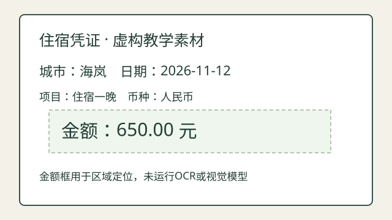

应用专题 18B · 本地媒体实验
听到哪里，历史就保留到哪里
下方是本手册用数学波形生成的4秒提示音，没有人声。它用于验证真实浏览器播放、暂停和打断，不能证明语音识别、TTS、模型推理或网络时延。
查看18A的原始票据和证据区域

图片是自绘SVG；区域坐标可核查，但金额观察由固定夹具给出，未运行OCR。
尚未播放
- 已生成音频
- 等待媒体元数据
- 浏览器报告已播放
- 0.000 秒
- 打断后保留的历史范围
- 尚未打断
currentTime 是媒体时钟，近似表示播放位置；并不能证明用户实际听见或理解。暂停可以继续；打断取消本次输出，后续播放要先重置。